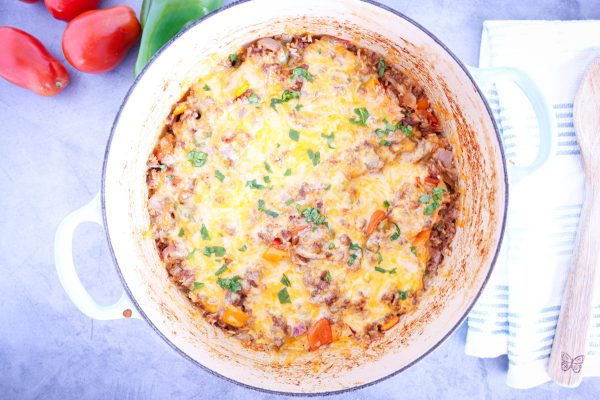

Home
Casserole

A photo of casserole by Hollis Homestead
Description
Enjoy this easy and flavorful casserole!
Ingredients
- Cooking Spray
- 2 (7 ounce) cans whole poblano peppers, drained
- 8 ounces Monterey Jack cheese, shredded
- 8 ounces Cheddar cheese, shredded
- 2 large eggs
- 1 (5 ounce) can evaporated milk
- 2 tablespoons all-purpose flour
- ½ cup milk, or as needed
- 1 (8 ounce) can enchilada sauce or tomato sauce
Steps
- Gather all ingredients. Preheat the oven to 350 degrees F (175 degrees C). Grease an 8x8-inch baking dish with cooking spray.
- Evenly layer poblano peppers from 1 can in the bottom of the prepared baking dish.
- Sprinkle with 1/2 of the Jack and Cheddar cheeses, then cover with remaining poblano peppers.
- Mix eggs, evaporated milk, and flour together in a bowl; if mixture is too thick, you can add 1/2 cup milk to thin to desired consistency. Pour over chiles.
- Bake in the preheated oven for 25 minutes. Pour enchilada sauce evenly over the top; continue baking for 15 more minutes.
- Turn broiler on. Sprinkle top with remaining Jack and Cheddar cheeses. Place under the broiler until cheese is melted, 2 to 3 minutes.
- Serve and enjoy!
Recipe by CLARRISSA2 on Allrecipes
Home